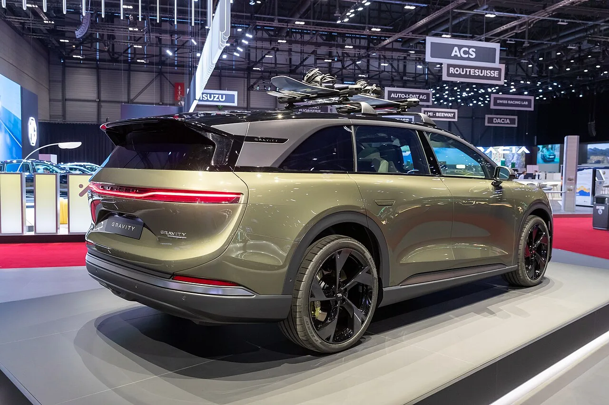
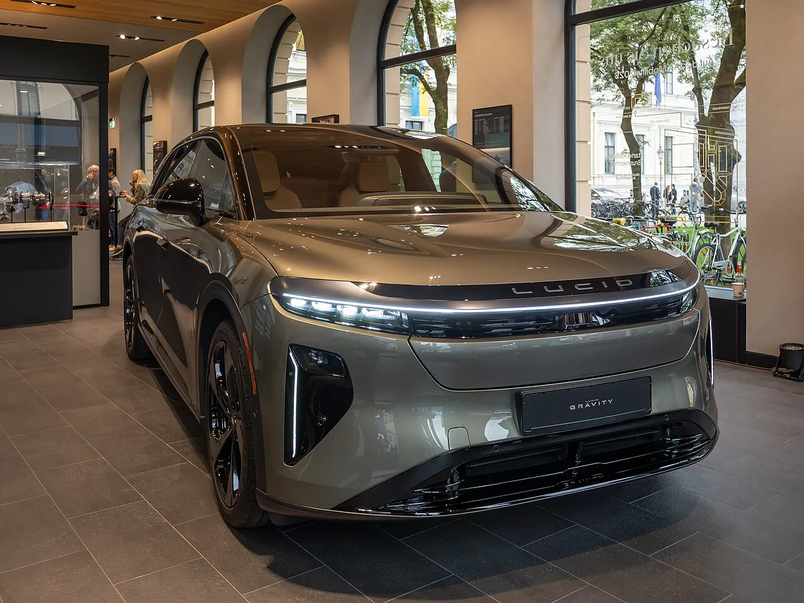

▲ 루시드 그래비티. 코스모스는 이보다 작고 저렴한 중형 SUV로 나온다
루시드의 새 중형 SUV 코스모스(Cosmos)가 1회 충전 400마일(약 644km) 이상을 목표로 하고 있습니다.
실비오 나폴리 CEO가 직접 말한 숫자입니다. 가격은 약 5만 달러로 예상됩니다.
먼저 짚어둘 것이 있습니다. 루시드 대변인은 이 수치가 예비 값이며 공식 EPA·WLTP 인증은 출시 임박 시점에 나온다고 못 박았습니다. 그리고 출시는 이미 2027년 초로 한 차례 연기됐습니다.
1. CEO가 직접 말한 숫자
주행거리를 묻는 질문에 실비오 나폴리 CEO는 이렇게 답했습니다.
"한 번 충전으로 400마일 이상입니다."
나폴리는 2026년 6월 1일 루시드 CEO로 취임했습니다. 그 전에는 쉰들러 그룹(엘리베이터 제조사) 회장 겸 CEO였습니다. 자동차 업계 출신이 아니라 제조·운영 전문가라는 점이 특징입니다.
취임 이후 그는 미국 인력 20% 감축, 애리조나 공장 2교대 폐지, 14억 달러 규모 현금흐름 개선 프로그램을 잇달아 내놨습니다. "고객·협력사·투자자와의 신뢰가 손상됐다"고 공개적으로 인정하기도 했습니다.
즉 코스모스는 회사가 대대적인 구조조정을 진행하는 와중에 나오는 차입니다.
2. 400마일을 어떻게 만드나 — 배터리가 아니라 효율
주목할 점은 루시드가 배터리를 키워서 이 숫자를 만들려는 것이 아니라는 것입니다.
효율 목표는 4.5마일/kWh입니다. 여기서 역산하면 배터리는 약 90kWh 수준입니다. 400마일급 전기차 치고는 크지 않습니다.
| 항목 | 값 |
|---|---|
| 목표 주행거리 | 400마일 이상 (예비) |
| 공기저항계수(Cd) | 0.22 |
| 목표 효율 | 4.5마일/kWh |
| 추정 배터리 용량 | 약 90kWh |
| 예상 가격 | 약 5만 달러 |
공기저항계수 0.22는 SUV로서는 매우 낮은 값입니다. 참고로 공기저항은 속도의 제곱에 비례하므로, 고속도로 주행에서 주행거리 차이를 만드는 가장 큰 변수입니다.

▲ 루시드 그래비티. 코스모스는 공기저항계수 0.22를 목표로 한다
3. 아틀라스 구동 유닛 — 모델Y와 직접 비교
루시드가 내세우는 핵심 기술은 새 '아틀라스(Atlas)' 구동 유닛입니다. 그리고 비교 대상을 대놓고 테슬라 모델Y 모터로 지목했습니다.
⚡ 아틀라스 구동 유닛 — 모델Y 모터 대비
- 부품 수 30% 감소 — 조립 공정과 고장 지점이 줄어듦
- 23% 경량화 — 무게가 줄면 같은 배터리로 더 멀리 감
- 효율 10% 향상 — 같은 전력으로 더 많은 구동력
루시드는 전기 파워트레인 효율에서 강점을 보여온 회사입니다. 루시드 에어가 한때 EPA 500마일을 넘겼던 것도 배터리 크기보다 구동계 효율 덕이 컸습니다.
부품 30% 감소는 원가 측면에서도 의미가 있습니다. 5만 달러라는 가격을 맞추려면 구동계 원가를 낮춰야 하기 때문입니다.

▲ 루시드 에어. 한때 EPA 500마일을 넘긴 것도 배터리 크기보다 구동계 효율 덕이었다
4. 경쟁 상대와 나란히 놓고 보면
400마일이라는 숫자가 어느 정도인지 비교해보겠습니다.
| 모델 | 주행거리 | 비고 |
|---|---|---|
| 루시드 코스모스 | 400마일 이상 | 예비 수치, 미인증 |
| 테슬라 모델Y 프리미엄 RWD | 357마일 | EPA 인증 |
| 리비안 R2 | 330마일 |
모델Y 최장 사양보다 40마일 이상 앞섭니다. 루시드가 "어떤 테슬라보다 멀리 간다"고 말할 근거입니다.
경쟁 상대로는 BMW iX3와 볼보 EX60도 거론됩니다. 두 차 모두 비슷한 시기에 같은 체급으로 들어옵니다.
다만 다시 강조하면, 코스모스의 400마일은 아직 인증받은 값이 아닙니다. 모델Y의 357마일은 EPA 인증 수치입니다. 같은 기준으로 비교한 것이 아닙니다.

▲ 루시드는 배터리 크기가 아니라 구동계 효율로 주행거리를 만들어온 회사다
5. 연기된 출시와 회사 사정
코스모스의 출시는 2027년 초로 연기됐습니다. 루시드가 중형 모델을 미룬 것은 이번이 처음이 아닙니다.
배경에는 회사 실적이 있습니다. 2026년 2분기 매출은 4억500만 달러로 전년 대비 56% 늘었지만, 총마진은 -105%였습니다. 3억 달러 규모의 재고 손상이 반영된 결과입니다.
총마진이 마이너스 100%를 넘는다는 것은 차를 팔수록 손해가 커진다는 뜻입니다. 이 상태에서 신차를 서둘러 내는 것은 위험합니다.
나폴리 CEO의 14억 달러 현금흐름 개선 프로그램과 인력 20% 감축은 이 상황에 대한 대응입니다. 코스모스 연기도 같은 맥락에서 읽는 편이 자연스럽습니다.
코스모스의 출시 연기 자체는 앞서 별도로 다룬 바 있습니다. 이번 소식은 그 연기된 차의 구체적인 목표 수치가 처음 나왔다는 데 의미가 있습니다.
6. 정리 — 숫자보다 먼저 확인할 것
루시드 코스모스는 400마일 이상, 약 5만 달러를 목표로 하는 중형 전기 SUV입니다. 공기저항계수 0.22와 새 아틀라스 구동 유닛(부품 30%↓·23% 경량·효율 10%↑)이 그 근거입니다.
다만 400마일은 예비 수치입니다. 루시드 대변인이 직접 공식 EPA·WLTP 인증은 출시 임박 시점에 나온다고 밝혔습니다. 모델Y의 357마일과 같은 기준으로 비교할 수 없습니다.
그리고 출시가 2027년 초로 이미 밀렸습니다. 총마진 -105%라는 실적과 대규모 구조조정이 진행 중인 상황에서, 이 일정이 다시 지켜질지가 숫자보다 먼저 확인해야 할 부분입니다.